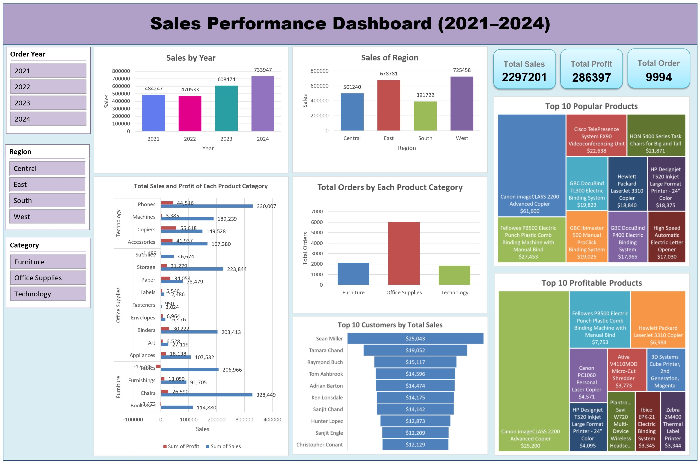

Tools: Python, Jupyter Notebook
Performed data cleaning and analysis on a movie dataset using Python (Pandas, Matplotlib, Seaborn), creating visualizations such as heatmaps, bar charts, and regression plots to uncover trends and correlations.

Tools: Excel
Cleaned and transformed the Superstore dataset using formulas, pivot tables, and filters, then built an interactive dashboard with dynamic charts, KPIs, and slicers to analyze sales and profit trends across regions, customer segments, and product categories.

Tools: Power BI
Cleaned and transformed 600+ survey responses, applied DAX calculations in Power Query, and developed an interactive dashboard using dynamic visualizations (bar, gauge, map, and donut charts) to analyze salary trends and job satisfaction among data professionals.

Tools: Python, Jupyter Notebook
Developed a machine learning model in Python using K-Nearest Neighbors (KNN) to predict wine quality based on chemical properties such as alcohol, sulphates, and acidity. The model achieved 84.8% accuracy, with strong recall and precision, demonstrating reliable and consistent performance.

Tools: Microsoft SQL Server
Developed a Covid-19 data exploration project using SQL Server, showcasing skills in joins, CTEs, temporary tables, window and aggregate functions, and data transformation. Analyzed global trends in cases, deaths, and vaccinations, and created summary views to provide actionable insights by country and continent.

Tools: Microsoft SQL Server, Tableau
This project combines SQL data processing with Tableau visualizations to explore worldwide COVID-19 trends. SQL was used to clean, aggregate, and calculate key metrics such as total cases, deaths, and infection percentages, while Tableau dashboards provide interactive insights through tables, bar charts, maps, and line charts.

Tools: Tableau
This dashboard provides an interactive view of sales performance and profitability across products and regions, enabling users to quickly identify the most profitable areas. It also includes filtering for more detailed analysis.